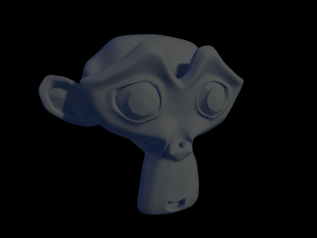
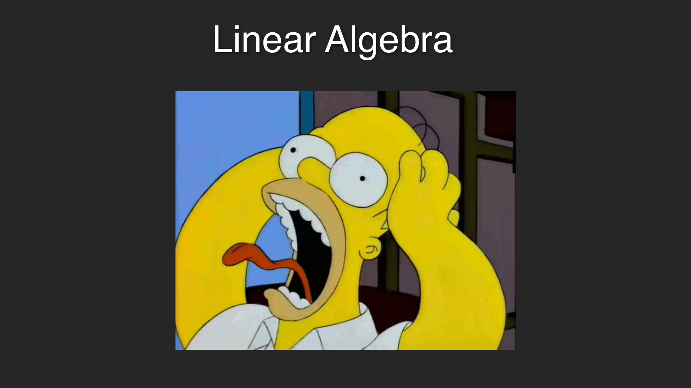
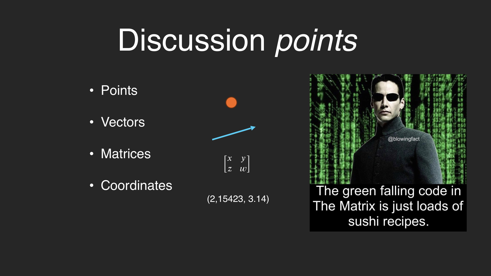
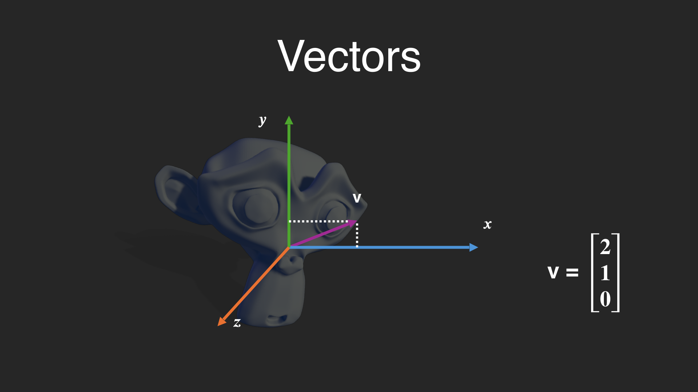
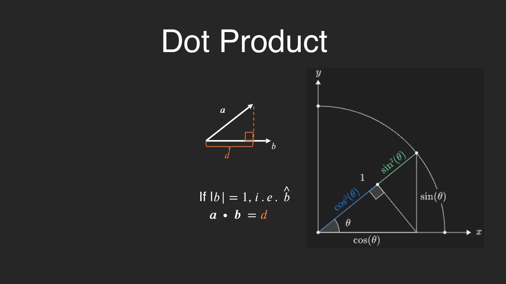
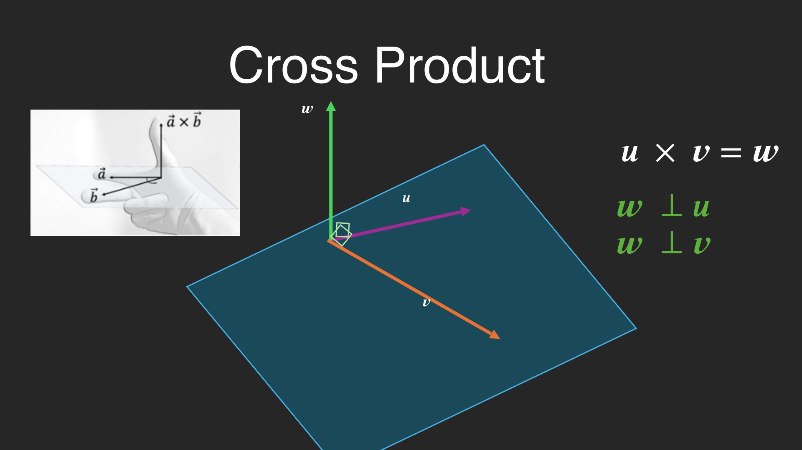
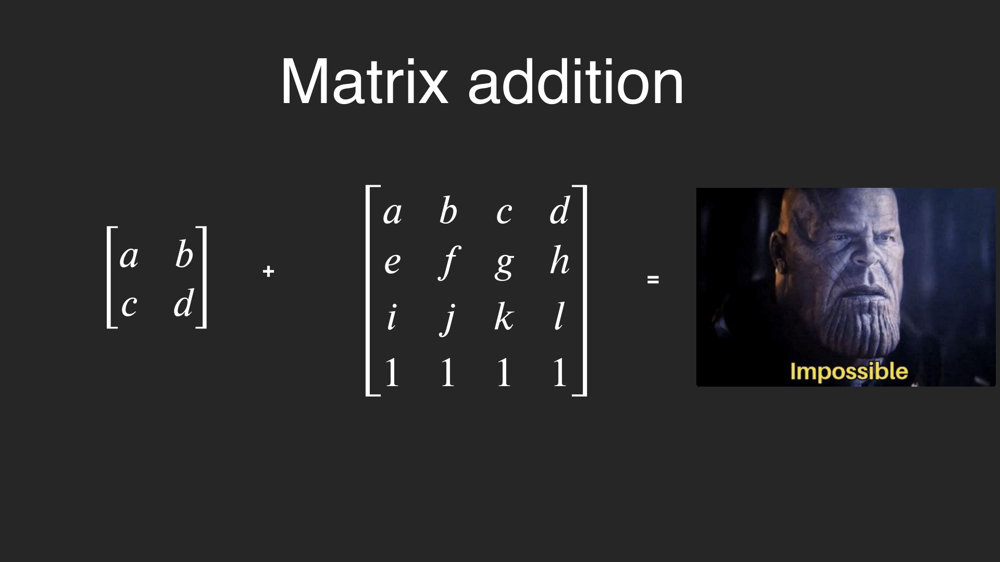

A look under the hood — past the game engines and GPUs — at the maths that runs through the whole graphics & computer vision course.

We all know what modern graphics can do. To understand what's really going on, we go deeper than engines or GPUs and think abstractly. There's some trig and geometry here — but the recurring antagonist is linear algebra.
If your gut reaction is to run, that's fair. The pay-off is huge though: these concepts come back again and again across both the graphics and the computer-vision halves of the course. Let them sink in once and the rest gets easier.

Points and vectors are geometric. Coordinates are numbers. Matrices? Numbers, functions, or geometry depending on how you use them — so we won't pin them down just yet.
An absolute location in space, e.g. a spot on Suzanne's eyebrow.
geometricA displacement — direction + size. Not an absolute position.
geometricGrids that can be vectors, transformations, or solve systems.
numbers / functionsPlain numbers like (2, 15423, 3.14) describing a position in some space.
numbers
(And no, not that Matrix. The annoying one with numbers, letters and coordinates.)
You may be used to a little arrow on top: v⃗. In graphics we're special — a bold lowercase letter almost always means a vector.
For vectors we use column-matrix notation. They can be n-dimensional, but here we mostly stay at 2–3 (occasionally 4):
Flip a vector on its side with a little T and you've transposed it — every row becomes a column (and vice-versa):
Pedantic? Maybe. Worth making? Definitely — it matters once we multiply things.
Points are absolute locations. Vectors are displacements. Move Suzanne across the room to eat the cheese: the displacement v between her nose and eyebrow stays identical, but the absolute point P becomes a brand-new P′.
A vector doesn't describe an absolute spot — only an offset. So the same v can sit anywhere. Translate the model and you must define a new point:
What does [2 1 0] even mean? 2 what — centimetres? potatoes? A vector only has meaning inside a frame of reference: some axes, in some space, with an origin.
Look closely and the axes themselves have arrows — they are vectors describing the space that vectors live in. We pick axes that are orthonormal:
With units fixed, [2 1 0]ᵀ finally means something concrete: travel 2 along x, 1 along y, 0 along z. That tip is where the vector points from the origin.

A vector space comes equipped with two operations. The first: multiply by a scalar. Every coordinate scales by the same number — the tail stays at the origin, only the length changes.
Multiply v = (2, 1) by 2 and you get the longer 2v = (4, 2). Scalar multiplication is purely about how long the vector is (and which way it points if the scalar is negative).
Add two vectors by adding matching components. Geometrically: lay them tip-to-tail, and the diagonal of the parallelogram is the resultant.
For subtraction, flip one vector around the origin and add — connect the tail of a to the tip of −b. Same tip-to-tail idea, just with a flipped arrow.
The axes x and y are basis vectors. Scale them by numbers (scalars, usually cᵢ) and add — that linear combination can reach any vector in the space.
c = scalars · b = basis vectors. With standard (orthonormal) basis vectors, every vector is a linear combination of the axes. The set of all reachable vectors is the span.
No displacement, no force. v + 0 = v and v · 0 = 0
Same vector, flipped through the origin — every coordinate × (−1). −v = (−1)·v
Want the scalar length of a vector? It's just Pythagoras. If that length equals 1, it's a unit vector — incredibly important later.
If |v| = 1 we write it v̂ and call it a unit vector. Normalising = scaling a vector to length 1 without changing its direction (divide by its magnitude).
Multiply matching components and sum. The result is a scalar, not a vector — and it secretly encodes the angle between the two vectors.
Two unit vectors? Then â·b̂ = cos θ directly — gold, since we deal with unit vectors constantly. Perpendicular vectors give cos 90° = 0, so their dot product is always zero.

The projection picture comes straight from the trigonometric circle: drop a perpendicular from the tip of a onto b, and the shadow it casts is exactly d = a·b̂.
(The full proof is lovely but this isn't the maths unit — derive it in your own time.)
Where the dot product spits out a scalar, the cross product of two vectors gives a third vector that's perpendicular to both of them.
The result w is only a unit vector if u and v both are. Crucially, the direction depends on your handedness convention: swap left-hand ↔ right-hand and w flips to −w.

Matrices are wildly useful: they can represent vectors, transformations, or solve linear systems. In graphics we mostly meet 2D, 3D and 4D square matrices (they can be any size — ML folks know).
Add matrices by summing entries in matching positions — just like adding vectors component-wise. But the two matrices must be the same dimensions, or the universe refuses to balance.

You can multiply matrices of different sizes — as long as the columns of the first equal the rows of the second. That lets a matrix act on a vector: feed v in, get a brand-new vector out.
Think of the matrix as a function that took an input vector, did some operations, and spat out a new one. That's exactly how we'll move, rotate and scale geometry for the rest of the unit.
Tap an answer — correct lights green, wrong lights red, and you get the feedback. Questions pulled from the course's visual quizzes.
These COMP27112 exam prompts all stand on the linear-algebra you just covered — vectors, dot & cross products, normals and matrices. Expand each for how to approach it.